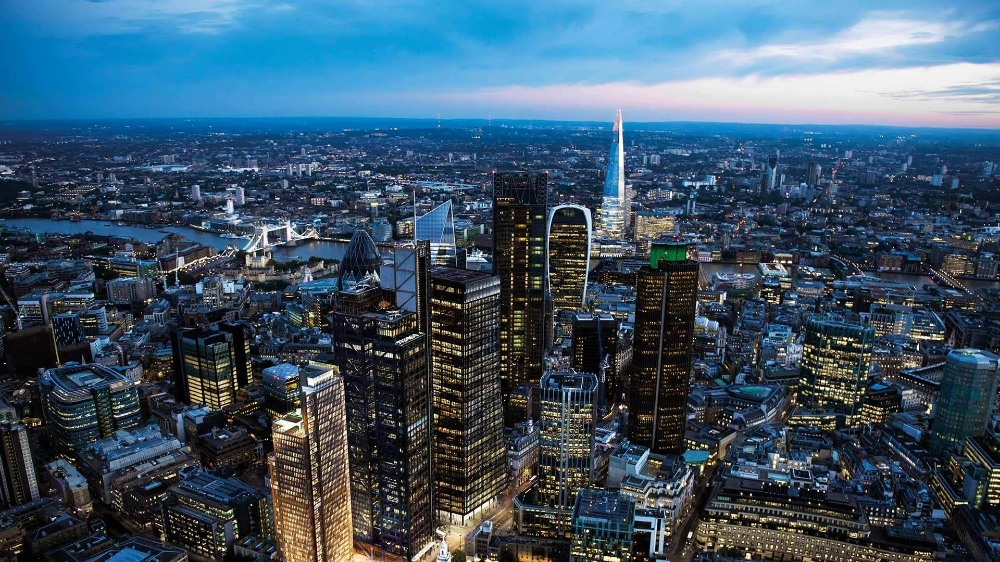
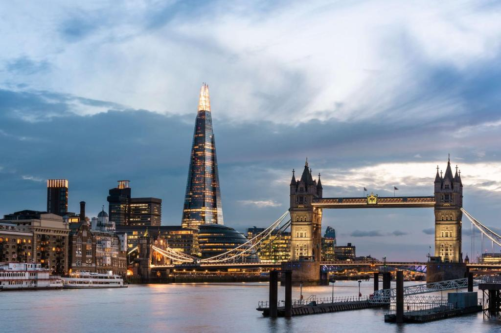
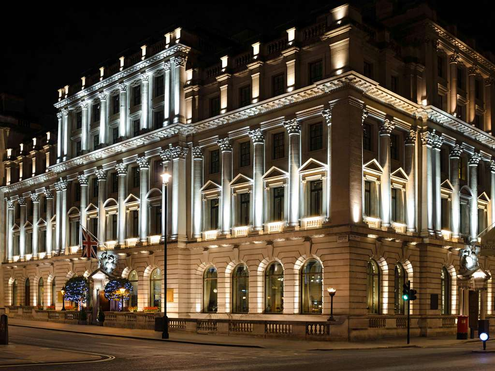
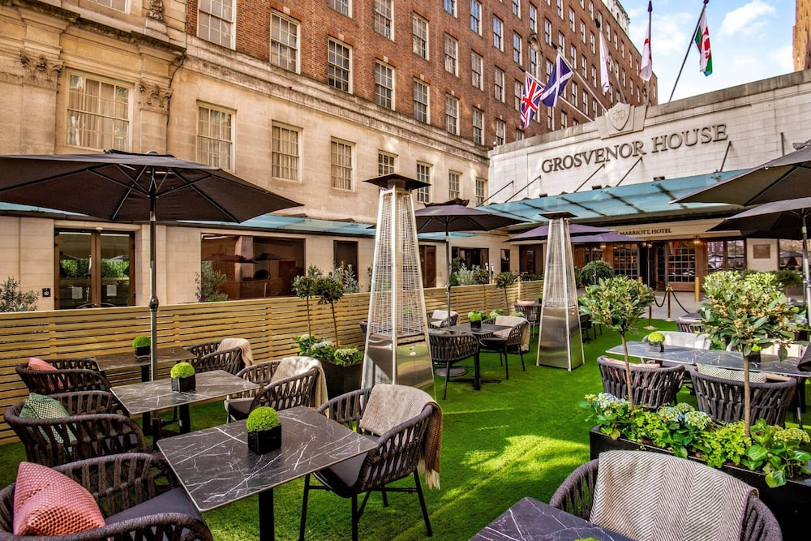
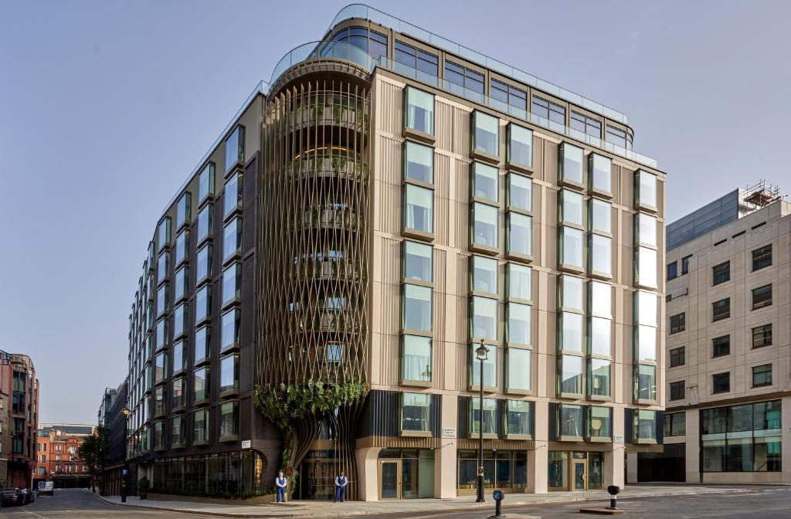
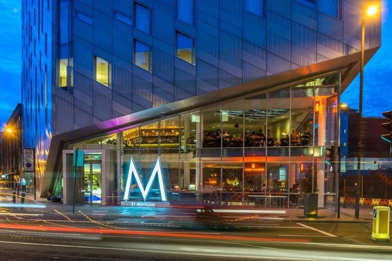

Hotel Booking in London
Find and Book the Best Hotels in London
Pan Pacific London
Nestled in the heart of the City of London on Bishopsgate, just steps from Liverpool Street Station, Pan Pacific London is perfectly positioned near iconic landmarks, while offering a tranquil escape of its own.
Designed by Yabu Pushelberg, this urban sanctuary elevates innovation and refined luxury.
The hotel seamlessly blends the classic and modern elements of London’s architecture, with Bishopsgate Plaza featuring a striking 43-storey bronze tower housing Pan Pacific London and private residences.
The historic 144-year-old Devonshire House is home to our contemporary cocktail bar, Silverleaf.
A beautifully landscaped public plaza unites these two cultural landmarks, creating a vibrant 24-hour destination for work, relaxation, meetings, and exploration.
As a pet-friendly hotel, we warmly welcome your furry companions.
Designed by Yabu Pushelberg, this urban sanctuary elevates innovation and refined luxury.
The hotel seamlessly blends the classic and modern elements of London’s architecture, with Bishopsgate Plaza featuring a striking 43-storey bronze tower housing Pan Pacific London and private residences.
The historic 144-year-old Devonshire House is home to our contemporary cocktail bar, Silverleaf.
A beautifully landscaped public plaza unites these two cultural landmarks, creating a vibrant 24-hour destination for work, relaxation, meetings, and exploration.
As a pet-friendly hotel, we warmly welcome your furry companions.


Shangri-La The Shard
Feel a unique connection at Shangri-La The Shard, London. Stay at the highest hotel in the capital, located in one of the world’s most iconic buildings, and enjoy breathtaking panoramic views that link you to the entire city.
As the only five-star luxury hotel in London Bridge, it combines sleek modern design with the area’s rich historic charm.
Explore nearby culinary destinations like Borough Market and Bermondsey Street, and enrich your stay with a range of authentic London experiences.
For leisure visitors, all of London’s famous landmarks, from Big Ben to St. Paul’s Cathedral and the Tower of London, are easily accessible. For business, a quick journey connects you to the City and Canary Wharf.
As the only five-star luxury hotel in London Bridge, it combines sleek modern design with the area’s rich historic charm.
Explore nearby culinary destinations like Borough Market and Bermondsey Street, and enrich your stay with a range of authentic London experiences.
For leisure visitors, all of London’s famous landmarks, from Big Ben to St. Paul’s Cathedral and the Tower of London, are easily accessible. For business, a quick journey connects you to the City and Canary Wharf.
Sofitel London St James
Sofitel London St James offers luxurious five-star accommodation in the heart of London's West End. This iconic hotel, consistently ranked among the best in the city, blends traditional British design with unmistakable French flair.
Housed in a Grade II listed building, the hotel boasts a Michelin-starred restaurant, Wild Honey St James, alongside The Rose Lounge, St James Bar, a wide selection of conference suites, and an award-winning spa.
Situated on Waterloo Place, in the midst of historic landmarks, Sofitel London St James is ideally located near major attractions such as Buckingham Palace, Big Ben, Pall Mall, and Piccadilly Circus. Guests can also enjoy the exclusive shops, restaurants, and galleries of the chic St James's district.
Housed in a Grade II listed building, the hotel boasts a Michelin-starred restaurant, Wild Honey St James, alongside The Rose Lounge, St James Bar, a wide selection of conference suites, and an award-winning spa.
Situated on Waterloo Place, in the midst of historic landmarks, Sofitel London St James is ideally located near major attractions such as Buckingham Palace, Big Ben, Pall Mall, and Piccadilly Circus. Guests can also enjoy the exclusive shops, restaurants, and galleries of the chic St James's district.


JW Marriott Grosvenor House
JW Marriott Grosvenor House London is a prestigious 5-star hotel located on Park Lane in Mayfair, London. Offering luxurious guest rooms and suites, top-tier dining, and a 24-hour fitness center, this hotel ensures a stay of unmatched comfort.
With its prime location, the hotel is just a short walk from Hyde Park and a quick trip to iconic landmarks such as Buckingham Palace and the London Eye.
In addition, the hotel features elegant and spacious meeting and conference facilities, making it the perfect choice for both leisure and business travelers.
With its prime location, the hotel is just a short walk from Hyde Park and a quick trip to iconic landmarks such as Buckingham Palace and the London Eye.
In addition, the hotel features elegant and spacious meeting and conference facilities, making it the perfect choice for both leisure and business travelers.
The BoTree Hotel
With 199 rooms, including 30 suites, The BoTree combines impeccable standards with a purpose-driven approach to redefine luxury-Conscious Luxury. This philosophy extends to every corner of our hotel, from LAVO, our Italian restaurant, to The BoTree Bar, where local regulars mix with international guests.
At the heart of everything we do are our core values: Truth, Love, and Compassion. These principles guide us in minimizing our environmental impact while fostering an atmosphere where guests, our team, and the community can connect, be inspired, and thrive.
Step outside, and you’ll find yourself within walking distance of favourite local spots, quirky boutiques, and London institutions-just a short stroll from Marylebone Lane. The BoTree bridges the vibrant areas of Marylebone, Mayfair, and Soho, offering the best of three unique neighbourhoods right at your doorstep. We bring you their hidden gems.
At the heart of everything we do are our core values: Truth, Love, and Compassion. These principles guide us in minimizing our environmental impact while fostering an atmosphere where guests, our team, and the community can connect, be inspired, and thrive.
Step outside, and you’ll find yourself within walking distance of favourite local spots, quirky boutiques, and London institutions-just a short stroll from Marylebone Lane. The BoTree bridges the vibrant areas of Marylebone, Mayfair, and Soho, offering the best of three unique neighbourhoods right at your doorstep. We bring you their hidden gems.


Montcalm East, Autograph Collection
Energizing, beautifully crafted, and full of innovation, Montcalm East stands as a central hub for one of London’s most dynamic neighborhoods. Its distinctive design has become a new landmark, where the artistic flair of Shoreditch meets the heart of the City of London.